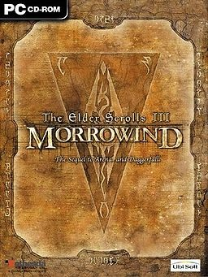
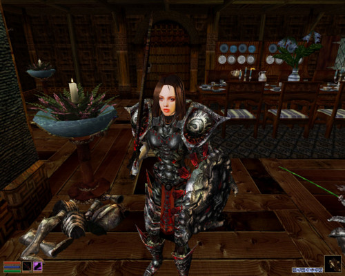
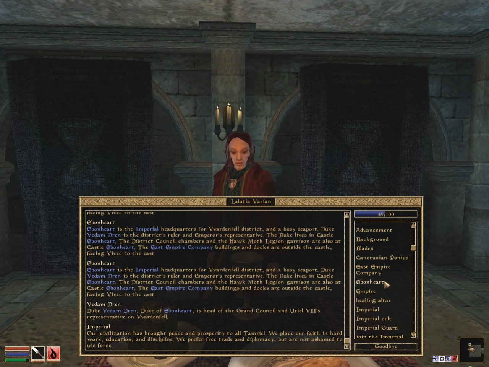
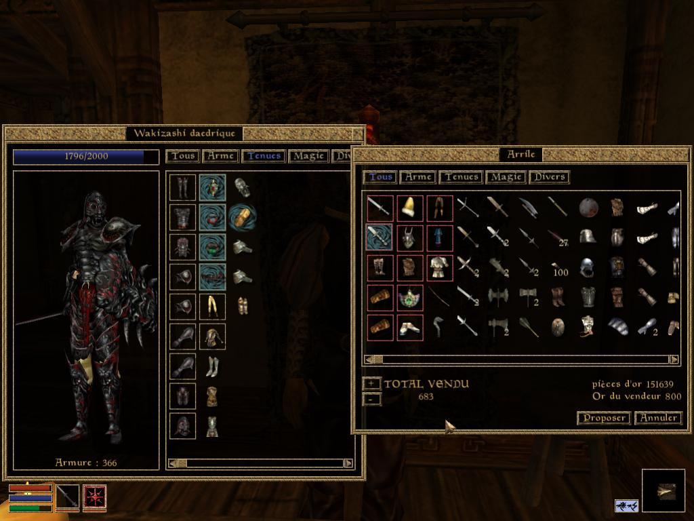
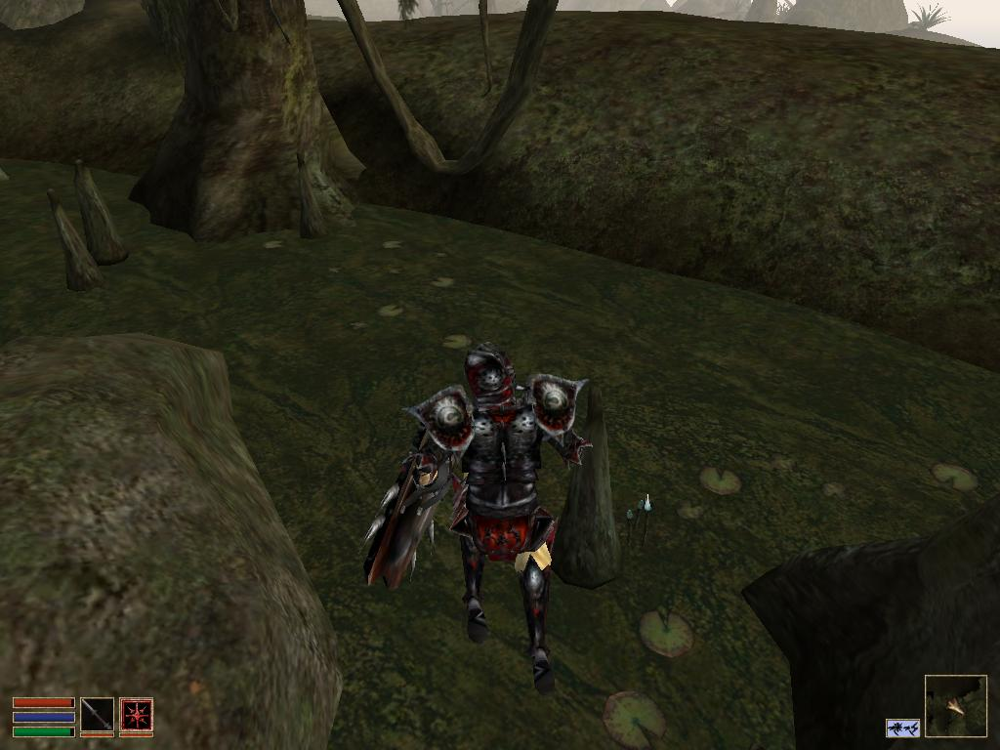
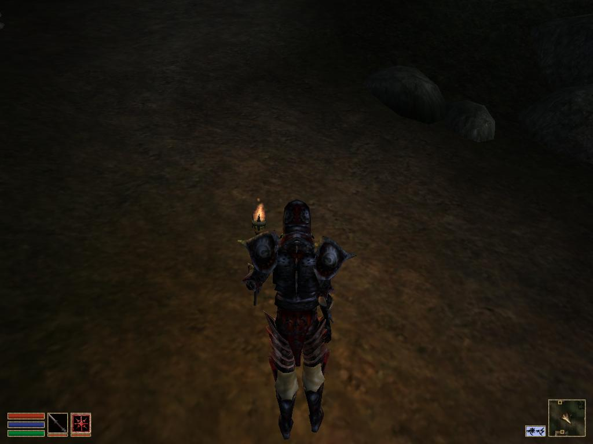
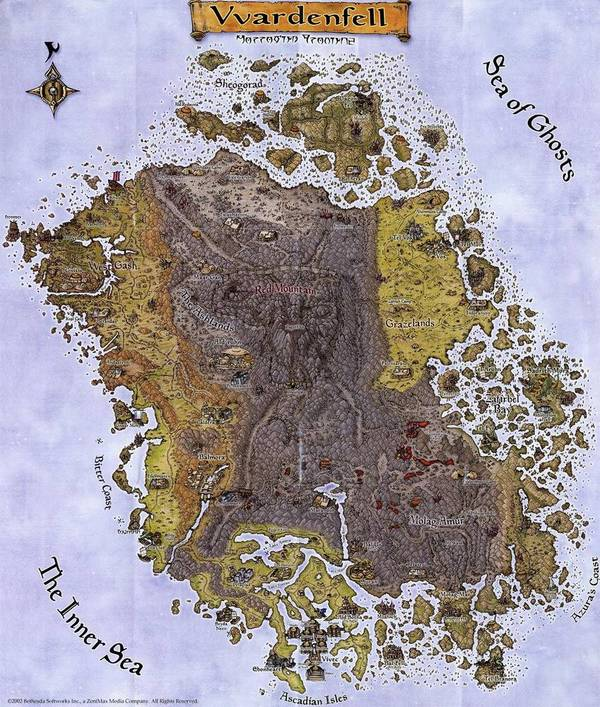
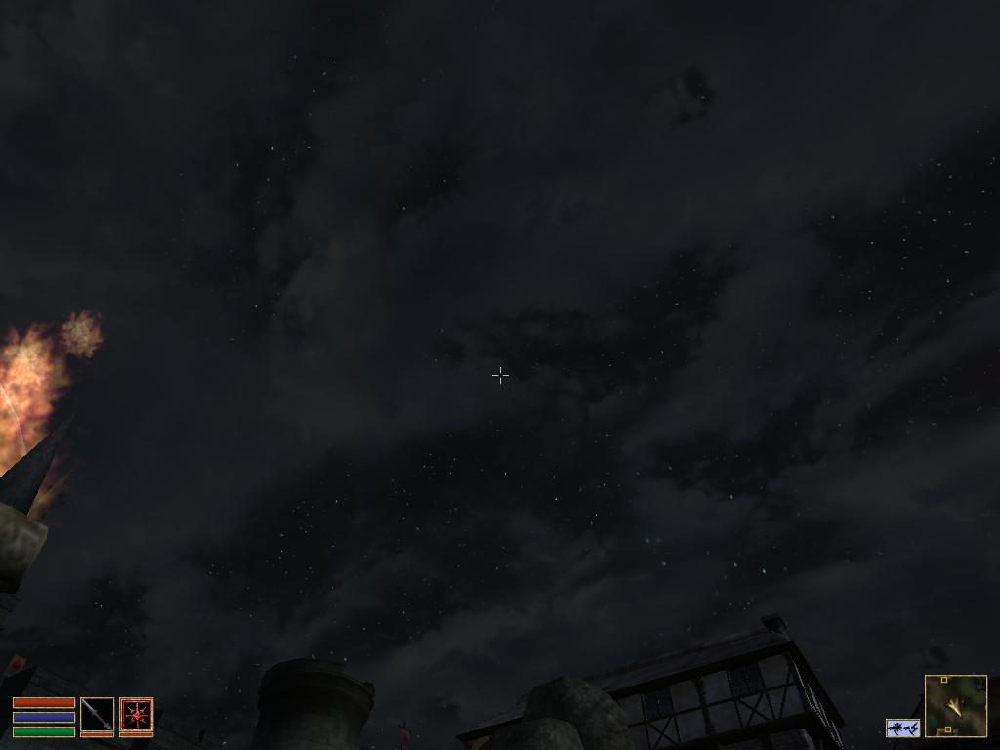
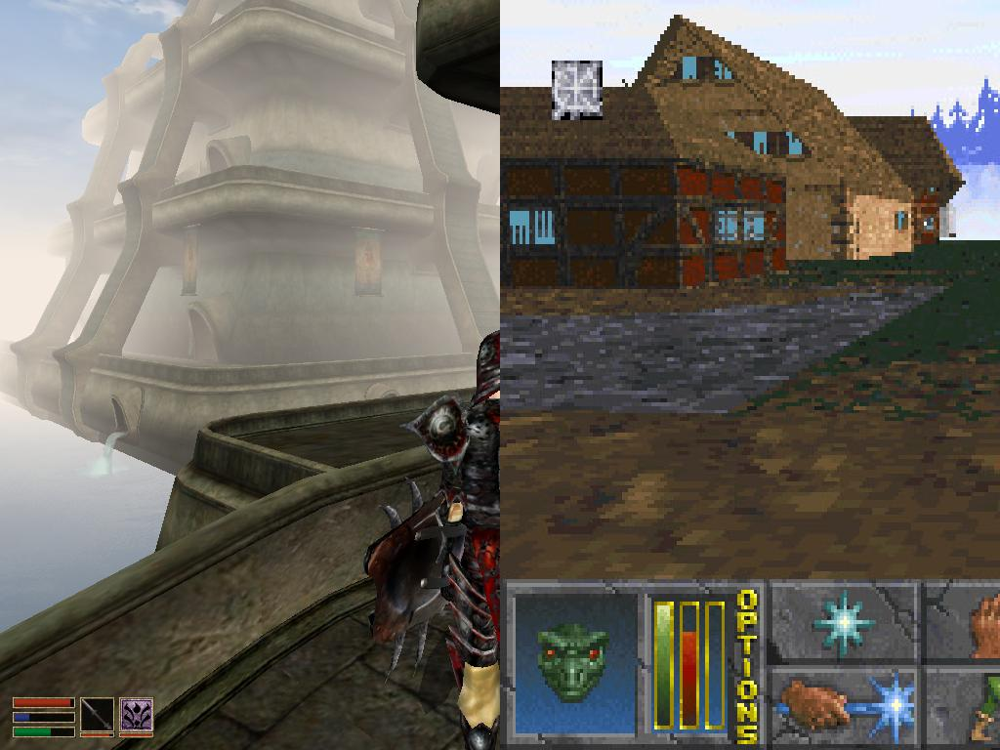
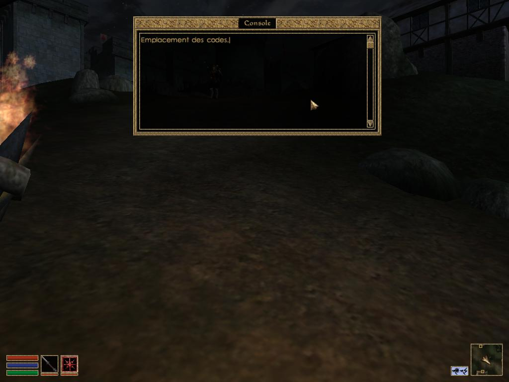

Morrowind, qui est le troisième volet de la série "The Elder Scrolls", est sorti depuis déjà quelques années (2002). Il était cependant un jeu graphiquement très avancé pour son époque, en effet le personnage évolue dans un monde en 3 dimensions très vaste et varié. C'est un RPG dans lequel la destinée du personnage et l'histoire changent en fonction des choix du joueur et des résultats de ses quêtes. Le jeu a été réalisé par Bethesda Softwork et édité par Ubisoft.
Nous pouvons choisir dès le début du jeu d'incarner des personnages parmi différentes races. Certaines rapprochent de l'homme comme les « impériaux » tandis que d'autres sont plus légendaires (les elfes) voire presque animaux. Nous ne contrôlons donc pas dans ce jeu un humain « ordinaire » mais un guerrier formé au combat doté d'une morphologie plus ou moins humanoïde. Il en va de même pour les PNJ, qui eux aussi peuvent prendre différentes formes.
La création d'un personnage
Les PNJ peuvent servir dans le carde de diverses actions : marchander, s'entrainer, recevoir des quêtes à accomplir, à suivre l'histoire principale. Des personnages « neutres » peuvent devenir aggressifs si on les attaque tandis que d'autres ne proposent que des combats grâce auxquels nous pouvons augmenter l'expérience du personnage. Les interactions entre le joueur et les PNJ sont malheureusement très peu diversifiées. En effet la demande de renseignement est automatique et prédéfinie et les personnages répondent pour une grande partie la même réponse qui n'apportent donc que peu d'informations personnelles : ceci n'est pas très réaliste.
Au fur et à mesure du temps les caractéristiques des personnages augmentent. L'acrobatie va augmenter en sautant, l'endurance en courant, ceci afin de permettre au joueur de gagner des combats de plus en plus difficiles. Il est impossible d'incarner un personnage dès l'enfance et le personnage n'acquiert aucun signe de vieillesse. Le jeu ne représente donc qu'une portion de la vie du personnage.
Nous pouvons dans ce jeu marchander des objets avec certains PNJ. Les prix baissent lorsque la compétence marchandage augmente. Diverses actions permettent de récolter des pièces d'or comme vendre des objets rares, accomplir des quêtes, voler de l'or. Cet argent permet donc d'acheter des objets et des équipements, très utiles lors de l'aventure.
L'environnement respecte la plupart des interactions naturelles qui sont évidemment le poids et la loi de la gravité. Lorsqu'un personnage saute, la courbe de son saut forme une parabole et tous les objets, les constructions sont placés à même le sol.
De même que dans la vie réelle nous ne pouvons pas passer au travers des murs, il existe des interactions entre les décors et le joueur : en effet le personnage ne peux pas s'enfoncer dans le sol, ni traverser des objets solides. Le personnage peut donc se cogner et perdre des points de vie si le choc est trop violent.
Les paysages et graphismes de Morrowind respectent la notion de perspective. Les objets et bâtiments sont par exemple plus petits lorsqu'ils sont loin et toutes les lignes directrices convergent vers le ou les points de fuite. Le trajet de la lumière est quant à lui également bien respecté : les rayons lumineux progressent en ligne droite afin de former des ombres cohérentes. Les halos lumineux des torches sont aussi très réalistes avec leur lumière diffuse.
La carte de Morrowind a un avantage, en effet elle est très grandes et possède une richesse de paysages (comme la montagne, le désert, la mer...).Et à chacun de ces paysages sont attribué des PNJ (personnages non joueurs) différents.
On peut remarquer que le jeu comprend des phases jour et nuits (pendant laquelle on peut par exemple observer la lune et les étoiles. Le temps est également instable le jour : il peut aller du soleil au brouillard et même de la pluie. Tous les passages de la journée sont présent (aurore, pleine journée et aube) accompagnés le plus souvent d'un temps précis. Il y a par exemple très souvent du brouillard le matin, suivi de soleil ou de pluie en fin de matinée. L'après-midi est très souvent ensoleillé mais à divers degré de luminosité, puis arrive la nuit, très rarement agrémenté de pluie.
Dans le jeu, la musique qui suit le personnage tout au long de l'aventure est adaptée à la situation : elle est différente suivant le lieu ou lorsque vous combattez. Des bruitages caractéristiques sont aussi présents : les paroles des PNJ, les bruits de pas, les bruissements lors d'un échange d'équipement contribuent à rendre le jeu plus réaliste.
Dialogue avec un personnage
Les bruitages
Le niveau graphique du jeu n'est que peu comparable par rapport à celle de nos jours mais possédait de sérieux atouts lors de sa sortie en 2002.
Les codes de triches permettent de contourner les règles les plus élémentaires, et réalistes par la même occasion, afin d'augmenter le « fun » et donner au joueur la possibilité de faire de choses impossibles normalement. Ceux-ci permettent un grand nombre de choses comme gagner de l'argent, augmenter ses caractéristiques, obtenir des objets très durs à avoir normalement et en grande quantité...
Site créé pour l'épreuve de TPE par Alexis Launay, Kilian Ollivier, Grégoire Coulombel et Flavien Lécuyer.


{kind=link}
{kind=link}
{kind=link}
{kind=link}
{kind=link}
{kind=link}
{kind=link}
{kind=link}
{kind=link}
{kind=link}